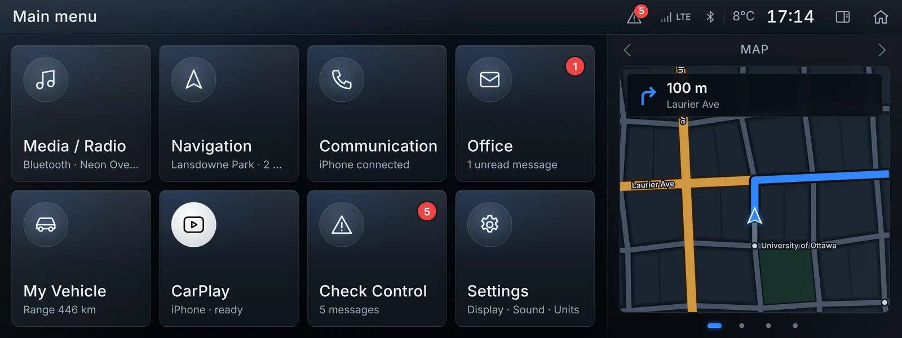

Car Infotainment UI
What if BMW’s iDrive NBT screen had been designed for fingers instead of a click wheel?

I started this years ago as a Bootstrap and jQuery sketch of my ideal car screen.
Version 2 is a ground-up rewrite in plain HTML, CSS and JavaScript on a fixed
1280 × 480 canvas, the size of a 10.25" automotive display. It opens from
file:// with no build step and runs on a Raspberry Pi in kiosk mode.
The rules: tap targets of at least 10 mm, one accent colour that carries all state, big glanceable numbers, and hardware keys that always get you home, even from inside CarPlay.
- One event bus keeps the native screens, split screen and CarPlay in sync
- Canvas maps built once into
Path2Dwith Dijkstra routing over the street graph - Every setting works: accent colour, units, balance pad, brightness
- Direct manipulation: drag the map, scrub tracks, swipe away warnings
Code on GitHub (opens in new tab)
Vanilla JS, Canvas, CSS color-mix(), Web Speech